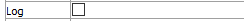
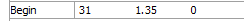
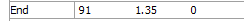
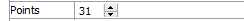
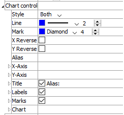
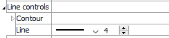

剖面绘图项
说明
沿空间中定义的一条线绘制网格属性的图表。该绘图项最前面的几个属性取决于第一个属性（contingent on the first attribute）（类型）。
属性
类型
将剖面显示设置为“图表”或“线”类型。
值
选择要显示的网格单元数值。将根据需要提供附加属性字段；下表中对这些字段作了说明。
| 加速度ᶜ | 附加ᵉᵘʷ | 孔隙压力ʷ | 应力-强度比ᵐ |
| 条件ᵐ | 流体 Biot 模量 | 特性ᵖᵐ | 目标力比 |
| 收敛 | 流体体积模量 | 饱和度 | 温度 |
| 密度ᵐ | 流体密度ᵐ | 应变增量ʸ | 热学特性ᵖᵐ |
| 位移ᶜ | 流体特性ᵖ | 应变率ʸ | 不平衡力ᶜ |
| 动力时间步 | 局部力比 | 应力ᶻ | 速度ᶜ |
| 有效应力ᶻ | 乘数 |
| 图例说明： |
| ᴸ所有数值都提供“对数”属性 |
| ᶜ其后跟随一个“分量”属性 |
| ᵉ其后跟随一个“附加”属性 |
| ᵐ其后跟随一个“方法”属性 |
| ᵖ其后跟随一个“特性”属性 |
| ᵘ其后跟随一个“类型”属性 |
| ʷ其后跟随一个“来源”属性 |
| ʸ其后跟随“分量”和“方法”属性 |
| ᶻ其后跟随“分量”、“应力”和“方法”属性 |
对数

使用对数刻度。
对数：在 \(y\) 轴上设置（勾选）对数刻度。
起点

指定剖面线的起始点。
起点：设置起始点的 \(x\)、\(y\)、\(z\) 坐标。
终点

指定剖面线的终止点。
终点：设置终止点的 \(x\)、\(y\)、\(z\) 坐标。
点

指定沿该线计算数值的点数。默认值为 11。
点数：设置点数。
图表控件 或 线控件
在此位置，若在 类型 属性中选择“图表”，将出现 图表控件 容器；若选择“线”，则出现 线控件。

图表控件：一个提供用于调整剖面图表外观的控件的容器。
样式：将剖面线的渲染方式设置为“标记”（仅标记）、“线”（仅线）或“两者”。
线：设置剖面线的颜色、线型和粗细（若 样式 中选择“标记”，则此项隐藏）。
标记：设置剖面线中所用标记的颜色、形状和大小（若 样式 中选择“线”，则此项隐藏）。
X 反向：反转序列中 \(x\) 值的显示顺序。
Y 反向：反转序列中 \(y\) 值的显示顺序。
别名：设置用于在图例中标识剖面序列线的别名。
X 轴和 Y 轴：这些容器提供用于处理坐标轴的控件。控件包括“对数”、“最小值”、“最大值”、“内部”、“标签”和“指数”。详情请参见 历史图表 绘图项（plot item） 中对这些控件的说明。
标题：使用复选框旁的字段设置“别名”，从而在剖面图表上设置标题（勾选）。还提供用于设置标题大小、文本样式和字体的附加控件。
标签：包含坐标轴标签（勾选），并附有用于文本大小、字体和样式的附加控件。
标记：在坐标轴上包含刻度标记（勾选），并附有用于文本大小、字体和样式的附加控件。
图表：控制图表的外观选项，例如图表的“边框”、“网格”、“位置”和“大小”。

线控件：一个提供用于控制剖面线外观的控件的容器。
等值线：设置等值线外观。详情请参见标准的 等值线（contour） 控件说明。
线：设置线的外观。详情请参见标准的 线（line） 控件说明。
透明度

设置绘图项的透明度。详情请参见标准的 透明度（transparency） 控件说明。
图例

设置绘图图例中该项目的标签。详情请参见标准的 图例（legend） 控件说明。
在 标题 下方，剖面绘图项还在 图例 中为 序列 提供控件——前提是在 类型 属性中选择了“图表”。
| 这些内容对您有帮助吗？… 版权与免责声明 |
FLAC3D © 2019, Itasca | 原文更新于 2020 年 10 月 8 日 |